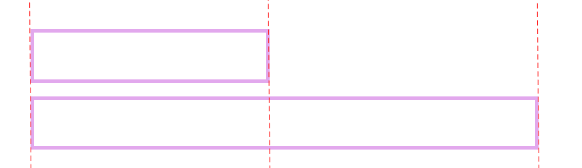
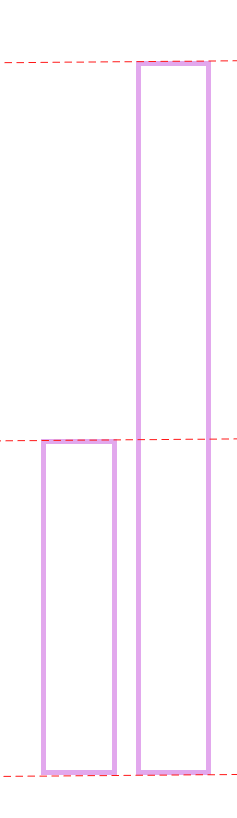
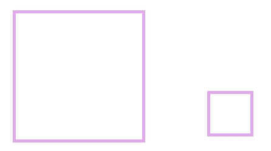

길이 비교하기
물건의 길이 비교

한쪽 끝을 맞추고 다른 쪽 끝을 비교합니다.
위에 있는 도형보다 밑에 있는 도형이 더 깁니다.
키 비교

아래쪽을 맟추고 위쪽 끝을 비교합니다.
왼쪽 도형이 오른쪽 도형보다 더 작습니다.
무게 비교하기
손으로 들어보거나 경험을 생각하여 비교합니다.예시) 배는 밤보다 더 무겁습니다.
넓이 비교하기

한쪽 끝을 맞추어 겹쳐보았을 때 남는 쪽이 더 넓습니다.
오른쪽 도형이 왼쪽 도형보다 더 넓습니다.